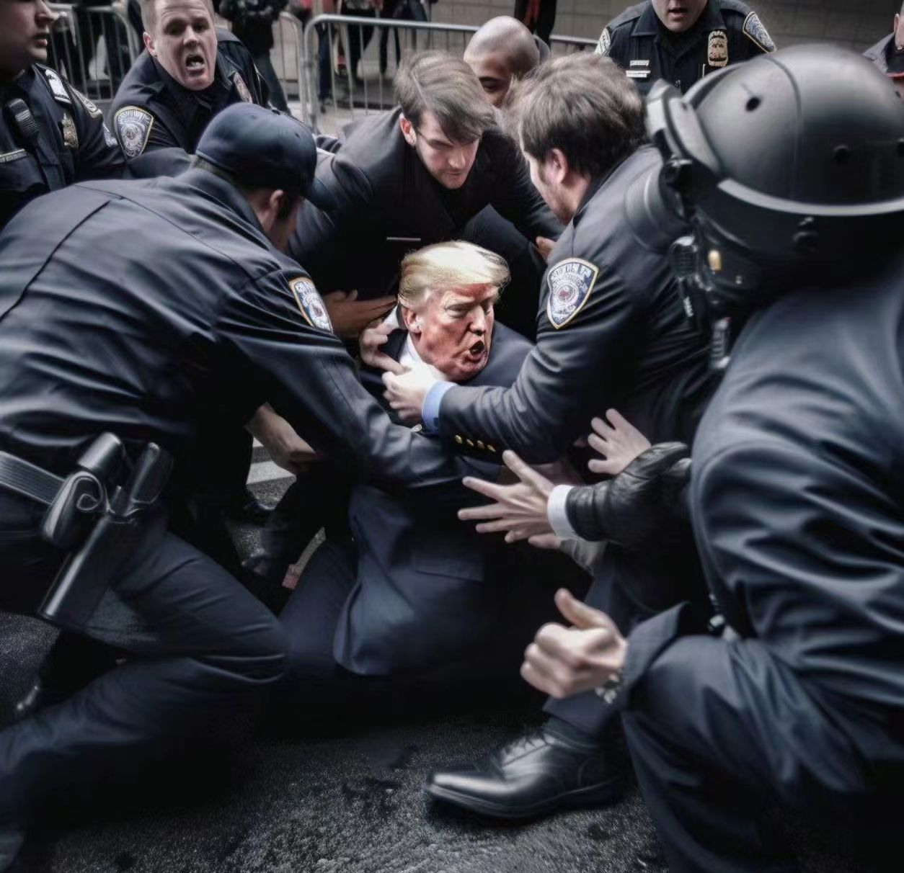
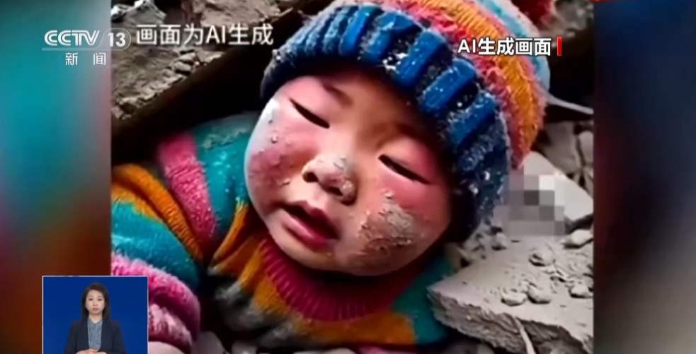
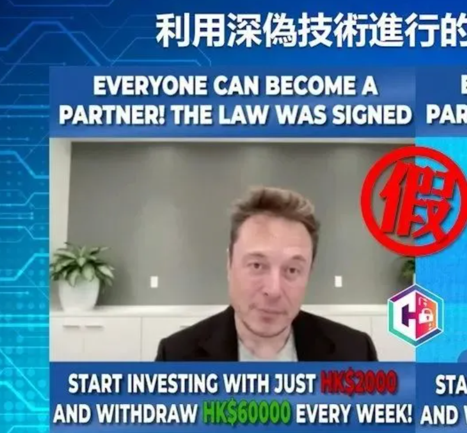

AIGC如何被用于"恶搞"？
技术原理与滥用方式深度解析
AI图像生成技术流程解析
视频：AI图像生成技术流程简析（来源：抖音博主@子牧说 | 且曼学院，内容仅用于学习成果展示，不用于商业用途）
AI 图像生成是依托深度学习模型实现的：模型先通过海量带文本标注的图像数据，学习 “文字描述” 与 “视觉特征” 的对应规律；主流技术（如 Midjourney 用的扩散模型）会从噪声图开始逐步去噪、叠加特征，部分早期方案（GAN）则靠 “生成器造图 + 判别器辨真假” 的对抗训练让图像变逼真。实际流程是用户输入文本提示词后，模型解析指令并调用已学规律生成图像雏形，再经细节优化，最终输出符合要求的全新图像。
主流AIGC工具对比
| 工具名称 | 主要功能 | 生成能力 | 滥用风险 | 防范措施 |
|---|---|---|---|---|
| DALL·E系列 | OpenAI 开发的文本生成图像工具，支持多风格创作、图像扩展 / 修改，可与 ChatGPT 联动优化提示词 | 文本理解能力强，画质清晰，适配创意类需求，但细节精细度略逊于专业工具 | 易生成逼真虚假人像、敏感场景，存在造谣 / 误导风险 | 内置敏感关键词过滤、内容审核机制，用户身份验证，限制高危主题生成 |
| MidJourney | 基于 Discord 的 AI 绘图工具，主打高质量图像生成，支持写实、艺术等多风格创作，提供社区分享功能 | 图像细节精细、艺术表现力强，逼真度极高（如 “特朗普被捕” 系列图的核心工具） | 易生成高度还原的虚假场景 / 人物，易被用于恶意造谣、制造恐慌 | 关键词过滤 + 人工审核社区内容，限制政治、暴力类主题生成，违规账号封禁 |
| Stable Diffusion | 开源 AI 绘图工具，支持本地部署、自定义训练模型（LoRA 等），可自由编辑图像元素 | 灵活性极高，支持个性化模型训练，但默认画质略弱，效果依赖用户对模型的优化 | 因开源属性审核宽松，易生成违规内容，且分散部署难以统一监管 | 社区规范引导，主流部署平台增加内容审核模块，开源项目内置基础内容过滤插件 |
| 国内AI作图工具 | 支持中文提示词的图像生成工具，适配国内文化场景，提供商用授权、版权合规选项 | 中文理解精准，符合国内审美偏好，商用合规性强，但创意风格多样性稍弱 | 易生成虚假国内场景 / 人物，传播不实信息 | 严格遵循国内法规的内容审核，用户实名认证，商用创作内容备案，限制敏感主题 |
表1：主流AIGC工具功能与风险对比
AI恶搞典型案例展示
政治人物恶搞
案例背景
2023 年 4 月特朗普因 “封口费” 案面临刑事指控期间，一组其戴手铐被捕、出庭受审的高度逼真 AI 照片在社交媒体疯传，虽标注 “AI 生成”，但因细节真实，迅速登上全球热搜，大量网民误将其当作真实新闻。
技术手段
核心依托 MidJourney 扩散模型，通过精准英文提示词定义场景与细节，再结合 Photoshop 后期修图和 Stable Diffusion 的 ControlNet 插件优化人物姿态与环境逻辑，消除 AI 生成的常见瑕疵。
影响
引发全球范围信息混乱，部分媒体出现误报，倒逼特朗普团队紧急澄清；推动 Meta、Twitter 等平台新增 AI 生成内容强制标注规则；成为探讨政治人物形象保护与 AI 言论边界的标志性伦理案例。
虚假新闻配图
案例背景
2025 年 1 月西藏日喀则定日县发生 6.8 级地震，一张 “小男孩被压在废墟下” 的照片在社交平台刷屏，引发公众强烈共情，后经核查证实，该图是 2024 年 11 月的 AI 创作，被恶意嫁接灾情并伪造官方媒体水印传播。
技术手段
借助 Stable Diffusion 开源模型搭配写实风格 LoRA 训练，生成儿童与废墟的逼真画面，再通过后期添加尘土、污渍强化真实感，同时移除原始 AI 标注、伪造权威媒体水印，降低网民辨别难度。
影响
严重干扰地震救援真实信息的传播，分散社会对灾情的关注；推动腾讯较真、微博辟谣等平台上线 AI 图像快速核查工具；促使国家网信办强化规定，要求 AI 生成图像必须添加不可篡改的数字水印。
身份伪造案例
案例背景
2023 年香港某跨国公司财务职员收到 “公司 CFO” 的紧急转账请求，视频会议中 “CFO” 及同事形象、话术均无破绽，职员遂转账 2 亿港元，事后发现参会人员除自己外均为 AI 生成的数字形象。
技术手段
攻击者利用公开视频资料训练高管的面部与语音 AI 模型，结合 DeepFaceLab 换脸技术和 ElevenLabs 语音合成工具，还原真人特征，再通过实时交互 AI 对话系统回应职员提问，全程无明显漏洞。
影响
创下当时 AI 诈骗的最高金额纪录，引发全球企业对远程办公安全的恐慌；推动跨国公司新增多渠道身份验证流程，强化财务审批安全；促使国际刑警组织发布 AI 身份伪造诈骗预警，加速深度伪造识别技术的研发与普及。
技术识别与防范
-
AI 生成图像识别技术介绍
主要通过算法检测 AI 生成内容的典型瑕疵（如手指形态异常、背景细节模糊），结合 “训练数据集特征比对”（匹配 AI 模型的创作特征）实现识别；同时依托专业工具（如谷歌 AI 内容检测器、腾讯较真平台的 AI 鉴定系统），辅助人工快速区分真实图像与 AI 生成内容。
-
数字水印与溯源技术
是从源头管控的核心手段 ——AI 作图工具在生成内容时，会嵌入不可见的数字水印（包含工具标识、生成时间等信息），搭配溯源系统可追踪内容的创作路径；即使内容被后期修改，专业工具仍能提取水印信息，明确其 AI 生成属性（国内文心一格、通义万相均已搭载该技术）。
-
平台内容审核机制
采用 “AI 预审 + 人工复核 + 用户举报” 的多层机制：先通过关键词过滤、AI 生成特征检测，拦截敏感 / 虚假 AI 内容；对高风险内容启动人工复核；同时要求 AI 生成内容强制标注 “AI 创作” 标签，违规内容将被快速下架，发布者面临账号限流或封禁处罚。
-
公众媒体素养教育
聚焦 “AI 内容辨别方法” 普及 —— 指导公众检查图像细节瑕疵、核实内容标注、通过权威平台交叉验证信息；同时网信办、媒体等机构会开展科普活动（如 AI 虚假信息案例宣传），提升公众对 AI 恶搞内容的警惕性。
技术防范是遏制 AI 滥用的关键防线，能有效降低虚假信息传播、恶意恶搞的风险；但也面临 “AI 技术迭代快，识别工具易滞后”“开源 AI 工具分散，统一监管难度大” 等挑战，需要技术研发、平台管理、公众意识、监管政策的多方协同，才能形成更完善的防范体系。